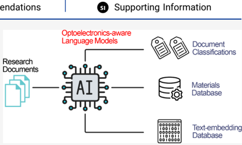
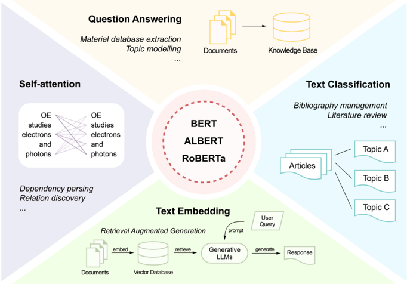
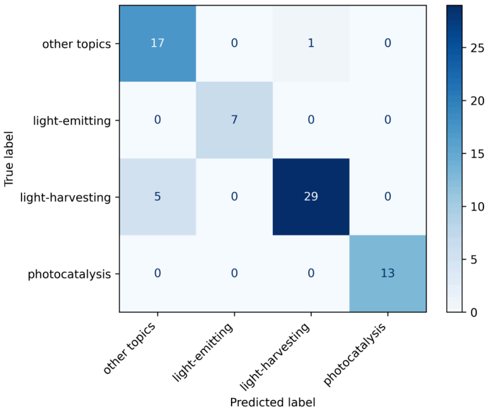
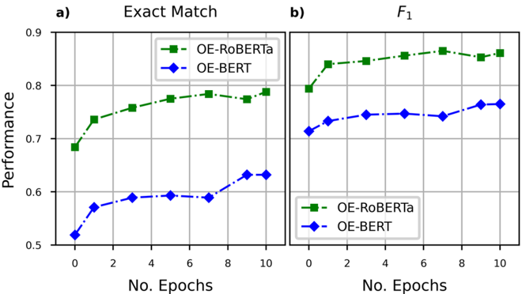
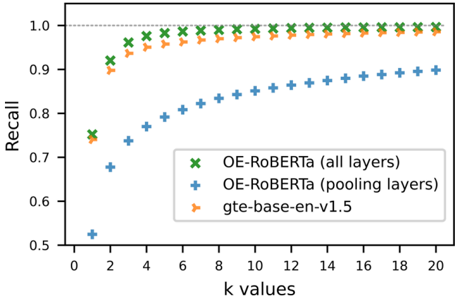

Perfecto, Santiago . Ya revisé tu paper “Cost-Efficient Domain-Adaptive Pretraining of Language Models for Optoelectronics Applications” (Huang & Cole, 2025). Te hago un resumen traducido y explicado en español para que lo tengas claro:
Objetivo del trabajo
El artículo busca adaptar modelos de lenguaje (BERT, ALBERT, RoBERTa) al dominio de la optoelectrónica de una forma más barata y eficiente, en vez de entrenarlos desde cero con enormes cantidades de datos y recursos.
Proponen el uso de Domain-Adaptive Pretraining (DAPT): tomar un modelo ya preentrenado en inglés general y seguir entrenándolo con literatura científica en optoelectrónica.
Metodología
Corpus: recopilaron ~192.000 publicaciones en optoelectrónica → limpiaron y procesaron hasta obtener 5.7 GB de texto
Mucho más pequeño que el corpus de RoBERTa (160 GB).
Modelos adaptados:
OE-BERT
OE-ALBERT
OE-RoBERTa
(el prefijo OE significa “Optoelectronics-Enhanced”).
Entrenamiento:
Hicieron DAPT por 10 épocas (~6000 pasos) en un supercomputador (Polaris, Argonne).
Esto tomó solo 3 horas en 64 GPUs A100 (mucho menos que otros trabajos como OpticalBERT que necesitó 8 días)
Experimentos principales
Masked Language Modeling (MLM): probaron si los modelos aprendían vocabulario técnico.
OE-RoBERTa acertó en valores numéricos y términos científicos.
El RoBERTa original solo acertaba con unidades comunes (ej: “nm”, “%”)
Clasificación de abstracts (EHC-10k dataset):
Categorías: emisión de luz (E), cosecha de luz (H), fotocatálisis (C).
Los modelos adaptados siempre superaron a sus contrapartes generales
Mejor resultado: OE-RoBERTa (≈98% precisión).
Clasificación de artículos más citados (2023):
Añadieron una categoría “otros” para realismo.
El mejor fue OE-RoBERTa con lowercasing (quitando mayúsculas confusas), logrando 92% en F1
Question Answering (SQuAD v1.1 y dataset TADF):
En preguntas de inglés general, el DAPT redujo un poco la performance, pero en preguntas específicas de optoelectrónica, los modelos adaptados fueron muy superiores.
OE-RoBERTa > OpticalBERT > RoBERTa general
Text Embedding & Retrieval:
Fine-tunearon OE-RoBERTa para crear embeddings vectoriales de títulos y abstracts.
Mejoró el recall@k en la búsqueda de artículos relevantes (hasta +2.5% en recall@5)
Conclusiones
DAPT es barato y eficiente: con pocos recursos logran modelos especializados que superan a modelos mucho más costosos.
RoBERTa es el mejor punto de partida para adaptación en dominios científicos (mejor que BERT/ALBERT).
Aplicaciones futuras:
minería de datos de materiales,
clasificación de literatura,
sistemas RAG (retrieval-augmented generation),
enriquecimiento de bases de datos en ciencia
Explicación sencilla
Este paper demuestra que no hace falta entrenar un LLM desde cero para un área científica. Basta con tomar un modelo ya existente (RoBERTa) y seguir entrenándolo con artículos de tu dominio → obtienes un modelo “experto” en ese campo, con mucho menor costo en tiempo y GPUs.
En este caso, adaptaron modelos al lenguaje de la optoelectrónica y probaron que entienden mejor los términos técnicos, clasifican papers más precisamente y responden preguntas de la disciplina mejor que los modelos generales.
Abstract (traducido)
Los modelos de lenguaje preentrenados han demostrado gran capacidad y versatilidad en tareas de procesamiento de lenguaje natural (NLP), y tienen aplicaciones importantes en la investigación en optoelectrónica, como la minería de datos y el modelado de tópicos. También se han desarrollado muchos modelos de lenguaje para otros dominios científicos, entre los cuales BERT es una de las arquitecturas más usadas.
En este trabajo presentamos tres modelos “conscientes de la optoelectrónica”: OE-BERT, OE-ALBERT y OE-RoBERTa, que superan tanto a sus contrapartes entrenadas en inglés general como a modelos más grandes en diversas tareas de NLP aplicadas a la optoelectrónica.
Nuestro trabajo también demuestra la eficacia de un método de preentrenamiento adaptativo de dominio (DAPT) rentable con RoBERTa, que reduce en más de un 80% los requisitos de cómputo en el preentrenamiento, manteniendo o mejorando su desempeño. Todos los modelos y conjuntos de datos están disponibles para la comunidad de investigación en optoelectrónic
Conclusiones (traducidas)
Este estudio investigó un método rentable de preentrenamiento adaptativo de dominio (DAPT) para producir modelos de lenguaje ajustados a aplicaciones en optoelectrónica.
Se generaron tres modelos “conscientes de la optoelectrónica” (OE-BERT, OE-RoBERTa y OE-ALBERT) mediante DAPT sobre BERT, RoBERTa y ALBERT. Se evaluó su rendimiento en tareas de clasificación de resúmenes, preguntas y respuestas (QA), y generación de embeddings para recuperación de información, comparándolos con sus equivalentes en inglés general y con OpticalBERT.
Los modelos adaptados mostraron:
Mejor capacidad para clasificar abstracts, incluso con categorías no vistas previamente.
En QA sobre propiedades de TADF, OE-RoBERTa superó a RoBERTa-large y OpticalBERT, que habían recibido mucho más entrenamiento.
En recuperación de información, el modelo vectorial derivado de OE-RoBERTa superó al mejor modelo de embeddings general de tamaño similar (gte-base-en-v1.5).
El trabajo demuestra que DAPT consume muchos menos recursos de cómputo y logra igualar o superar modelos con preentrenamiento mucho más costoso. Además, se concluye que RoBERTa es el mejor modelo base para adaptación de dominio en ciencias naturales, gracias a su corpus de preentrenamiento más grande y a su tokenizador BPE.
Finalmente, los autores proponen que estos modelos específicos de dominio podrían usarse en el futuro para minería y enriquecimiento de bases de datos en ciencia de materiales, permitiendo acceder a información más detallada y precisa, y abriendo nuevas aplicaciones de IA en la investigación en optoelectrónica
Figuras del Paper (19)
Sin caption
Figura en pagina 1.
Sin caption
Figura en pagina 1.
Sin caption
Figura en pagina 1.
Sin caption
Figura en pagina 1.
Sin caption
Figura en pagina 1.
Sin caption
Figura en pagina 1.

Sin caption
Figura en pagina 1.
Sin caption
Figura en pagina 1.
Sin caption
Figura en pagina 1.
Sin caption
Figura en pagina 1.

Figure 1. Applications of BERT-like models in academic research. Left. BERT-like models are built with the transformer architecture, which computes the attention between text tokens. The attention scores can be exploited to conduct dependency parsing and relation discovery. The models can also be fine-tuned to tackle specialized downstream tasks. Top. The question-answering (QA) capability of BERT-like models can be applied to tasks such as text-mining for material databases and topic modeling for research trend analysis. Right. The models can also be fine-tuned to perform text classification, which has wide application in literature review and bibliography management. Bottom. BERT-like models can be modified to produce contextual text embeddings that can be used in document retrieval based on the embedding similarities. The advancement in LLMs and RAG systems have also promoted the application of embedding models.
Figure 1. Applications of BERT-like models in academic research. Left. BERT-like models are built with the transformer architecture, which computes the attention between text tokens. The attention scores can be exploited to conduct dependency parsing and relation discovery. The models can also be fine-tuned to tackle specialized downstream tasks. Top. The question-answering (QA) capability of BERT-like models can be applied to tasks such as text-mining for material databases and topic modeling for research trend analysis. Right. The models can also be fine-tuned to perform text classification, which has wide application in literature review and bibliography management. Bottom. BERT-like models can be modified to produce contextual text embeddings that can be used in document retrieval based on the embedding similarities. The advancement in LLMs and RAG systems have also promoted the application of embedding models.

Sin caption
Figura en pagina 2.

Figure 2. Training pipeline for the optoelectronics-adapted language models developed in this study. The starting BERT-like models, pretrained on general English text (ALBERT, BERT, and RoBERTa) were domain adaptive pretrained on optoelectronics research literature, yielding the OEadapted models. Each resulting OE model was then fine-tuned on three downstream tasks: abstract classification, question-answering, and textembedding, using task-specific training data sets. The resulting nine models represent the final utility models; such as the OE-RoBERTa model that serves for QA or the OE-ALBERT model that serves for abstract classification.
Figure 2. Training pipeline for the optoelectronics-adapted language models developed in this study. The starting BERT-like models, pretrained on general English text (ALBERT, BERT, and RoBERTa) were domain adaptive pretrained on optoelectronics research literature, yielding the OEadapted models. Each resulting OE model was then fine-tuned on three downstream tasks: abstract classification, question-answering, and textembedding, using task-specific training data sets. The resulting nine models represent the final utility models; such as the OE-RoBERTa model that serves for QA or the OE-ALBERT model that serves for abstract classification.

Figure 3. Keyword frequency bar chart for normalized keywords found in 20k Science Direct publications about optoelectronics These 20 normalized keywords outlined three major mutually exclusive categories in terms of material functions: light-emitting, lightharvesting, and photocatalysis categories.
Figure 3. Keyword frequency bar chart for normalized keywords found in 20k Science Direct publications about optoelectronics These 20 normalized keywords outlined three major mutually exclusive categories in terms of material functions: light-emitting, lightharvesting, and photocatalysis categories.
Sin caption
Figura en pagina 5.

Figure 4. Pretraining loss and token prediction accuracy progress of BERT, ALBERT, and RoBERTa when further pretrained on optoelectronics literature in order to produce OE-BERT, OEALBERT and OE-RoBERTa, respectively. All three language models achieved a similar masked token prediction accuracy at the end of the DAPT process, while their progress of loss values are more separated with the OE-RoBERTa model affording the lowest loss value.
Figure 4. Pretraining loss and token prediction accuracy progress of BERT, ALBERT, and RoBERTa when further pretrained on optoelectronics literature in order to produce OE-BERT, OEALBERT and OE-RoBERTa, respectively. All three language models achieved a similar masked token prediction accuracy at the end of the DAPT process, while their progress of loss values are more separated with the OE-RoBERTa model affording the lowest loss value.

Figure 5. Confusion matrix of the classification results on titles concatenated with abstracts from top cited optoelectronics papers in 2023, using the OE-RoBERTa case-lowered classification model. Most confusions occur between the 'light-harvesting' class and the 'other topics' class.
Figure 5. Confusion matrix of the classification results on titles concatenated with abstracts from top cited optoelectronics papers in 2023, using the OE-RoBERTa case-lowered classification model. Most confusions occur between the 'light-harvesting' class and the 'other topics' class.

Figure 6. Performance evolution on the TADF-numerical QA data set of the OE-BERT and OE-RoBERTa models against the progress of their optoelectronics DAPT process as defined by the number of epochs of the DAPT process. a) The progressive evolution of the Exact Match metric. b) The progressive evolution of the F 1 metric. The metric scores of OE-BERT and OE-RoBERTa evolves highly parallel for both Exact Match and F 1 .
Figure 6. Performance evolution on the TADF-numerical QA data set of the OE-BERT and OE-RoBERTa models against the progress of their optoelectronics DAPT process as defined by the number of epochs of the DAPT process. a) The progressive evolution of the Exact Match metric. b) The progressive evolution of the F 1 metric. The metric scores of OE-BERT and OE-RoBERTa evolves highly parallel for both Exact Match and F 1 .

Figure 7. Recall @k results plotted against k for 1 ≤ k ≤ 20 when testing on the test set of the OE-Ttl-Abs-303k data set using the gte-base-en-v1.5 model, the OE-RoBERTa embedding model (all layers fine-tuned), and the OE-RoBERTa embedding model (pooling layers fine-tuned). The OE-RoBERTa embedding model that had all its layers fine-tuned outperformed the state-of-theart embedding model that is of a similar size, gte-base-env1.5 , on this optoelectronics in-domain retrieval task.
Figure 7. Recall @k results plotted against k for 1 ≤ k ≤ 20 when testing on the test set of the OE-Ttl-Abs-303k data set using the gte-base-en-v1.5 model, the OE-RoBERTa embedding model (all layers fine-tuned), and the OE-RoBERTa embedding model (pooling layers fine-tuned). The OE-RoBERTa embedding model that had all its layers fine-tuned outperformed the state-of-theart embedding model that is of a similar size, gte-base-env1.5 , on this optoelectronics in-domain retrieval task.